단백밥
밥과 단백질을 한 번에 챙기는 메인 식사 라인. 바쁜 날에도 따뜻하고 든든한 한 끼를 만든다.
Yundiet Detail Page Product Map
상세페이지에 바로 넣을 수 있도록 단백밥, 순수단백, 밸런시, 순소옥을 카테고리별로 나누고 각 제품의 이미지와 영양성분표를 정리했다.
밥과 단백질을 한 번에 챙기는 메인 식사 라인. 바쁜 날에도 따뜻하고 든든한 한 끼를 만든다.
단백질 반찬을 간편하게 보충하는 라인. 운동 후, 식단 구성, 한식 반찬 대체에 맞다.
곡물볶음밥 기반의 풍미형 식사 라인. 식단이 질리지 않도록 마라, 커리, 토마토, 시그니처 맛으로 넓힌다.
저당 통밀빵 라인. 빵을 포기하기 어려운 사람에게 아침, 간식, 식단빵 선택지를 준다.
단백밥은 윤식단의 중심 상품이다. 식단 도시락처럼 가볍게 보이기보다 “밥을 먹었다”는 만족감을 주는 따뜻한 한 끼로 보여주는 것이 좋다.
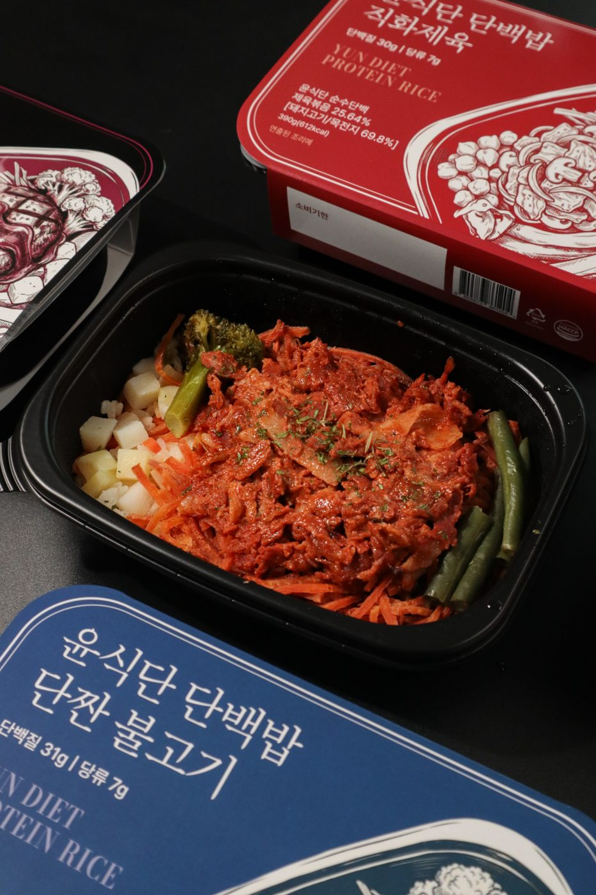
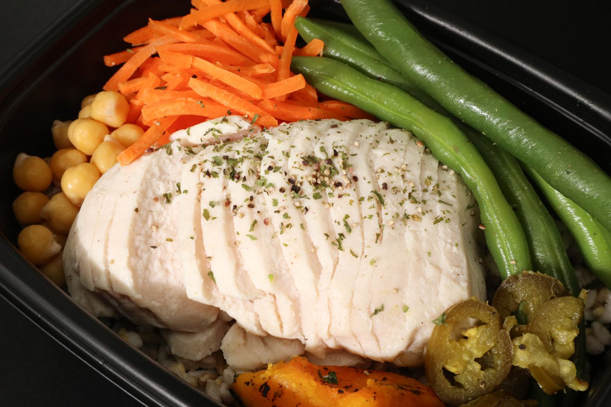
| 나트륨 | 528.26mg | 26% |
|---|---|---|
| 탄수화물 | 69.66g | 22% |
| 당류 | 0.95g | 1% |
| 지방 | 5.07g | 9% |
| 포화지방 | 3.23g | 22% |
| 콜레스테롤 | - | - |
| 단백질 | 53.58g | 97% |
| 나트륨 | 1,230mg | 62% |
|---|---|---|
| 탄수화물 | 88g | 27% |
| 당류 | 3g | 3% |
| 지방 | 8g | 15% |
| 포화지방 | 7g | 47% |
| 콜레스테롤 | 140mg | 47% |
| 단백질 | 21g | 38% |
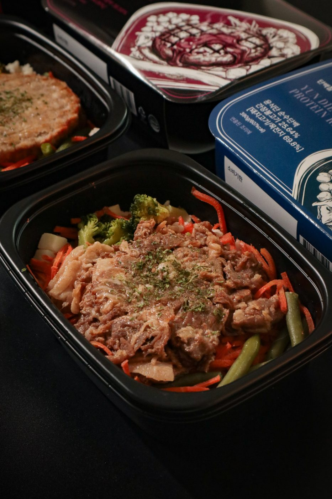
| 나트륨 | 1,190mg | 60% |
|---|---|---|
| 탄수화물 | 85g | 26% |
| 당류 | 3g | 3% |
| 지방 | 17g | 31% |
| 포화지방 | 7g | 47% |
| 콜레스테롤 | 140mg | 47% |
| 단백질 | 21g | 38% |
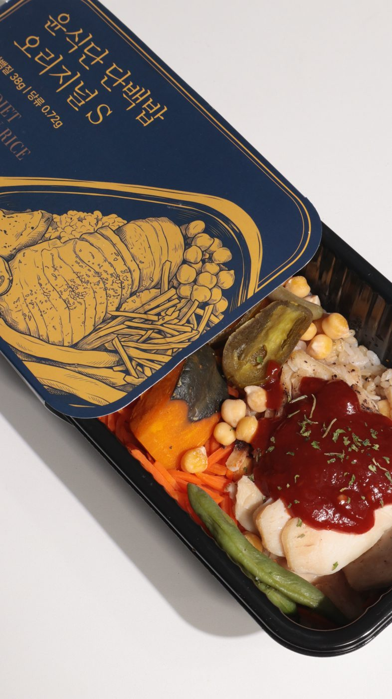
| 나트륨 | 1,427.87mg | 71% |
|---|---|---|
| 탄수화물 | 84.88g | 26% |
| 당류 | 0g | 0% |
| 지방 | 23.39g | 43% |
| 포화지방 | 8.65g | 58% |
| 콜레스테롤 | - | - |
| 단백질 | 28.22g | 51% |
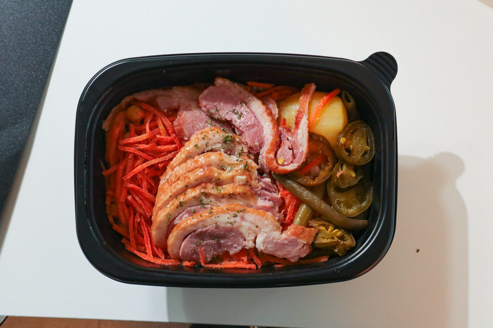
| 나트륨 | 638.23mg | 32% |
|---|---|---|
| 탄수화물 | 103.40g | 32% |
| 당류 | 0.50g | 1% |
| 지방 | 11.93g | 22% |
| 포화지방 | 8.86g | 59% |
| 콜레스테롤 | - | - |
| 단백질 | 31.16g | 57% |
순수단백은 밥보다 단백질 반찬이 필요한 고객에게 맞다. 운동 후 보충, 식단 도시락 구성, 집밥 위에 올리는 단백질 반찬으로 보여주는 것이 좋다.
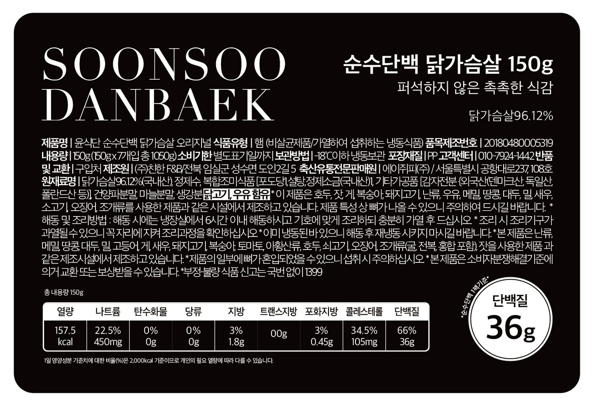
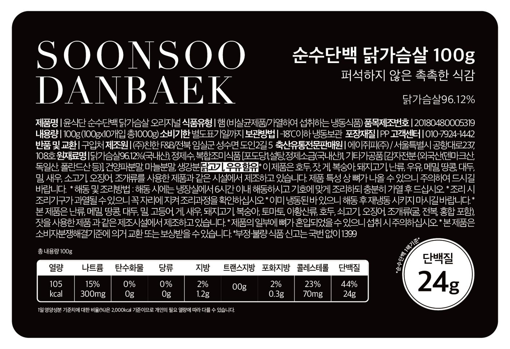
| 나트륨 | 300mg | 15% |
|---|---|---|
| 탄수화물 | 0g | 0% |
| 당류 | 0g | 0% |
| 지방 | 1.2g | 2% |
| 포화지방 | 0.3g | 2% |
| 콜레스테롤 | 70mg | 23% |
| 단백질 | 24g | 44% |
| 나트륨 | 450mg | 23% |
|---|---|---|
| 탄수화물 | 0g | 0% |
| 당류 | 0g | 0% |
| 지방 | 1.8g | 3% |
| 포화지방 | 0.45g | 3% |
| 콜레스테롤 | 105mg | 35% |
| 단백질 | 36g | 66% |
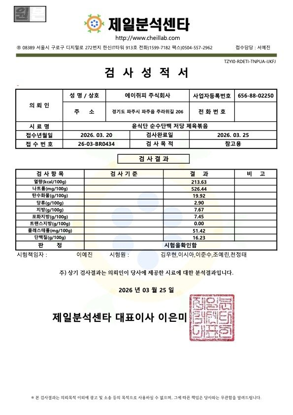
| 나트륨 | 526.44mg | - |
|---|---|---|
| 탄수화물 | 19.92g | - |
| 당류 | 2.90g | - |
| 지방 | 7.67g | - |
| 포화지방 | 7.45g | - |
| 콜레스테롤 | - | - |
| 단백질 | 16.23g | - |
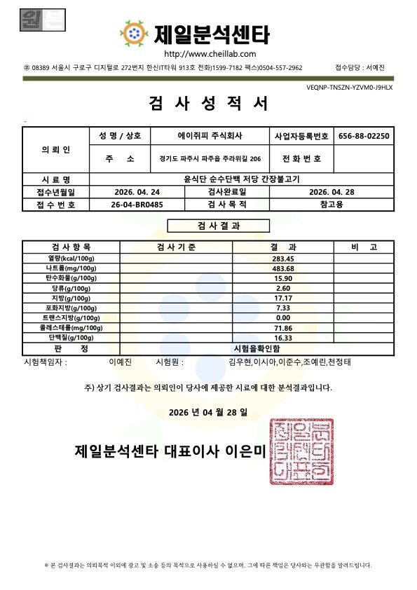
| 나트륨 | 483.68mg | - |
|---|---|---|
| 탄수화물 | 15.90g | - |
| 당류 | 2.60g | - |
| 지방 | 17.17g | - |
| 포화지방 | 7.33g | - |
| 콜레스테롤 | 71.86mg | - |
| 단백질 | 16.33g | - |
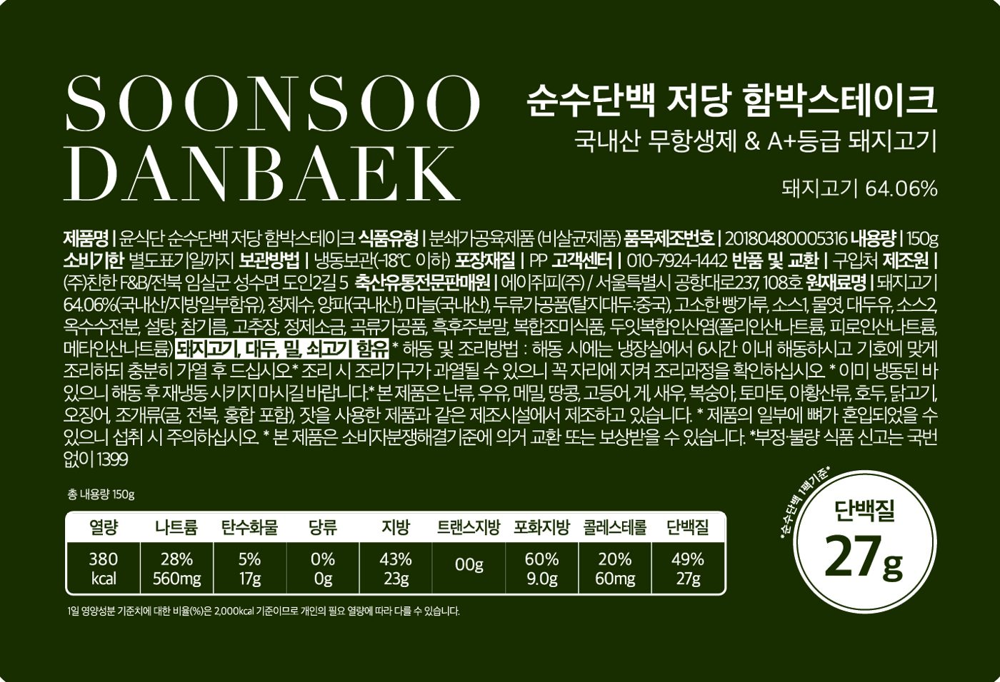
| 나트륨 | 560mg | 28% |
|---|---|---|
| 탄수화물 | 17g | 5% |
| 당류 | 0g | 0% |
| 지방 | 23g | 43% |
| 포화지방 | 9g | 60% |
| 콜레스테롤 | 60mg | 20% |
| 단백질 | 27g | 49% |
밸런시는 곡물볶음밥 기반의 풍미형 식사 라인이다. 식단이 무너지는 순간에 참는 선택이 아니라 맛있게 이어가는 선택지로 보여주는 것이 좋다.
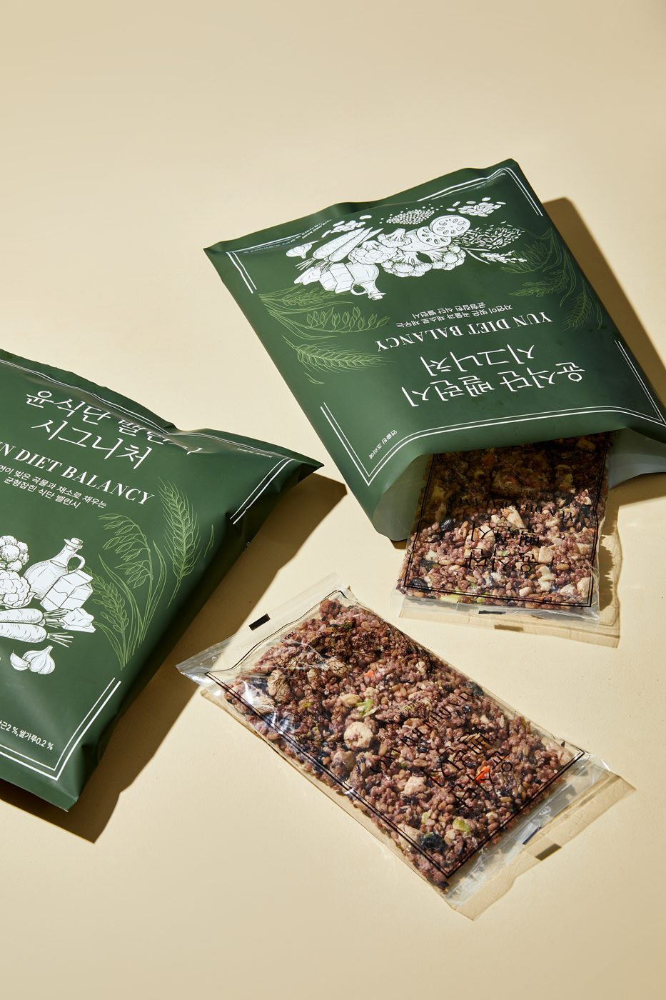
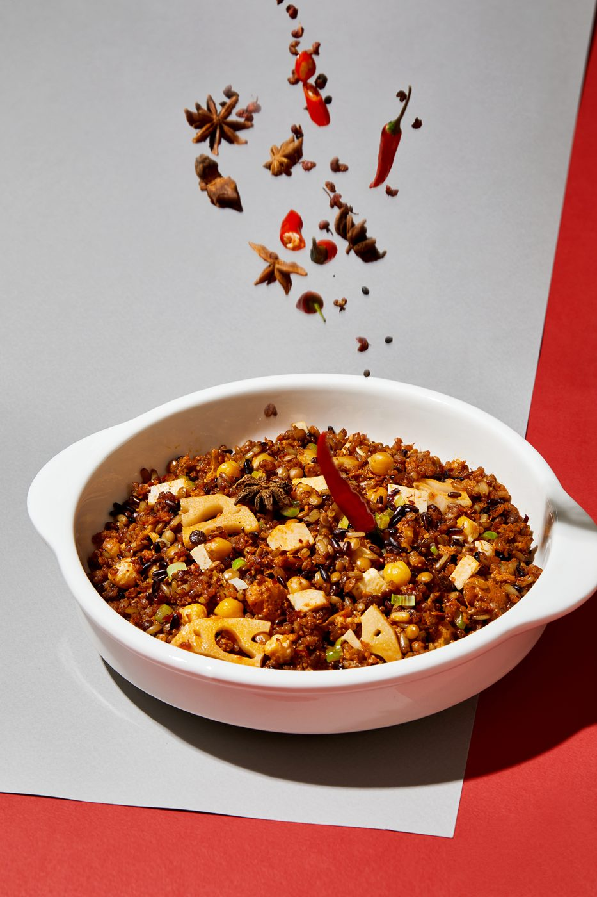
| 나트륨 | - | - |
|---|---|---|
| 탄수화물 | - | - |
| 당류 | - | - |
| 지방 | - | - |
| 포화지방 | - | - |
| 콜레스테롤 | - | - |
| 단백질 | - | - |
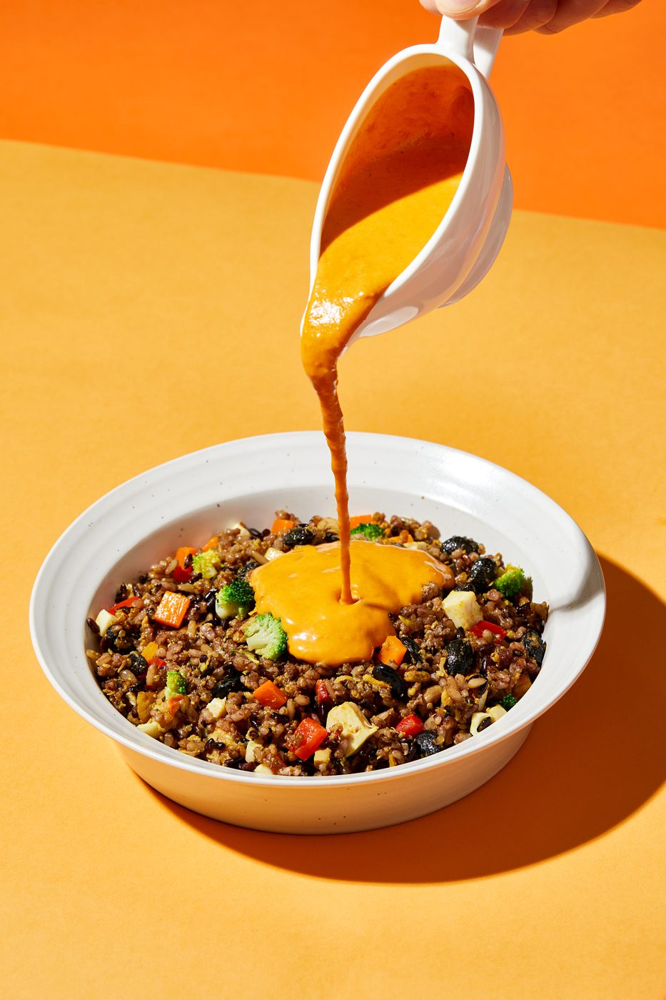
| 나트륨 | 940mg | 47% |
|---|---|---|
| 탄수화물 | 74g | 23% |
| 당류 | 2g | 2% |
| 지방 | 12g | 22% |
| 포화지방 | 4.5g | 30% |
| 콜레스테롤 | 80mg | 27% |
| 단백질 | 26g | 47% |
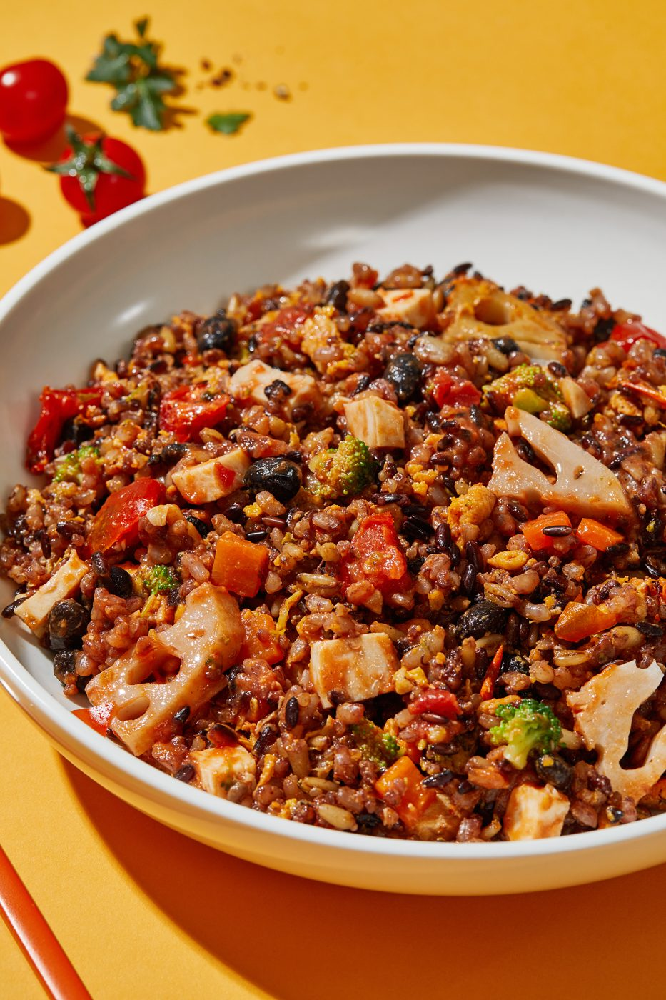
| 나트륨 | 1,530mg | 77% |
|---|---|---|
| 탄수화물 | 77g | 24% |
| 당류 | 12g | 12% |
| 지방 | 11g | 20% |
| 포화지방 | 3.9g | 26% |
| 콜레스테롤 | 105mg | 35% |
| 단백질 | 18g | 33% |
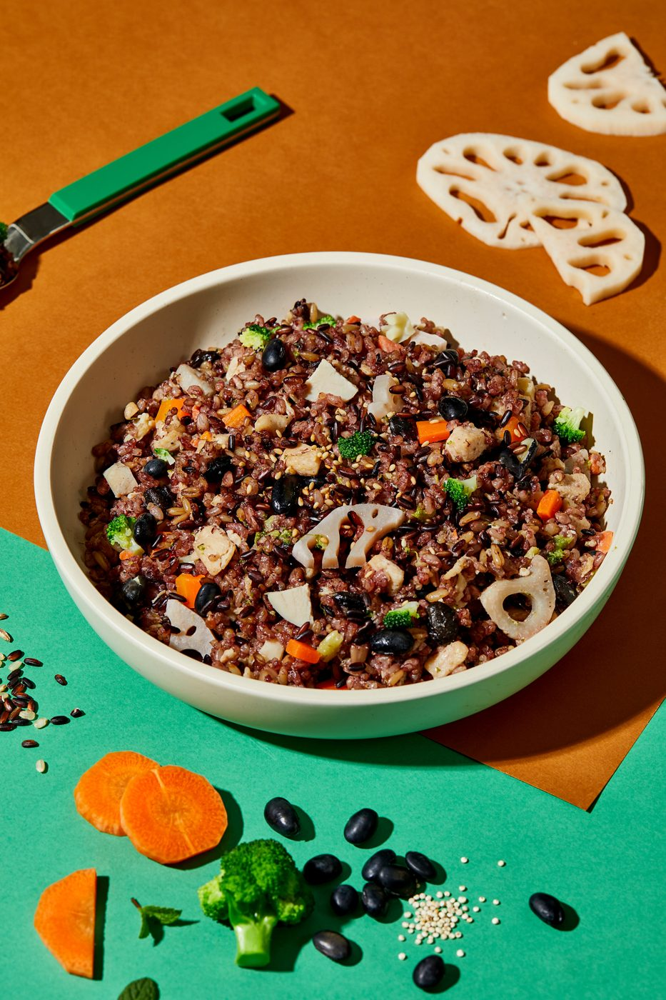
| 나트륨 | 1,230mg | 62% |
|---|---|---|
| 탄수화물 | 81g | 25% |
| 당류 | 2g | 2% |
| 지방 | 14g | 26% |
| 포화지방 | 3.9g | 26% |
| 콜레스테롤 | 60mg | 20% |
| 단백질 | 17g | 31% |
순소옥은 빵을 포기하기 어려운 고객을 위한 저당 통밀빵 라인이다. 다이어트 식단의 금지 음식이 아니라 아침과 간식 루틴 안에 넣을 수 있는 식단빵으로 보여주는 것이 좋다.
| 나트륨 | - | - |
|---|---|---|
| 탄수화물 | - | - |
| 당류 | 1g | - |
| 지방 | - | - |
| 포화지방 | - | - |
| 콜레스테롤 | - | - |
| 단백질 | - | - |
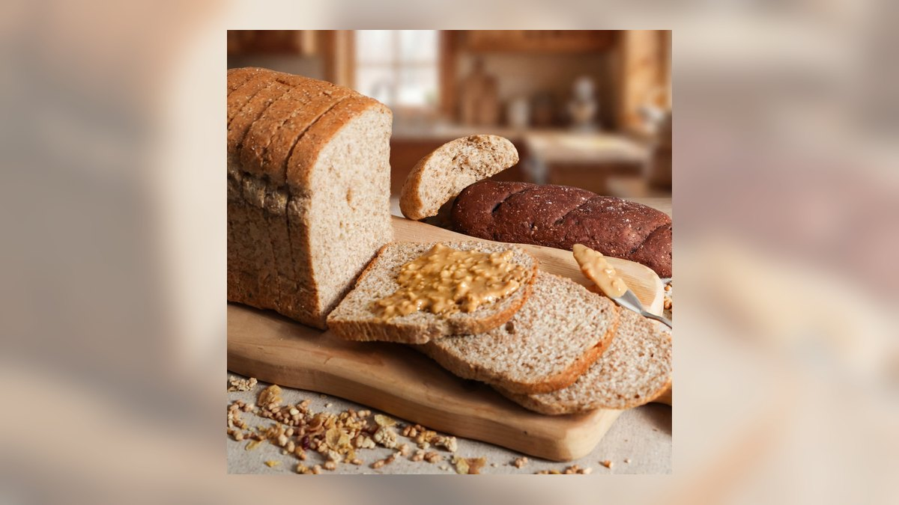
| 나트륨 | - | - |
|---|---|---|
| 탄수화물 | - | - |
| 당류 | 1g | - |
| 지방 | - | - |
| 포화지방 | - | - |
| 콜레스테롤 | - | - |
| 단백질 | - | - |
| 나트륨 | - | - |
|---|---|---|
| 탄수화물 | - | - |
| 당류 | 1g | - |
| 지방 | - | - |
| 포화지방 | - | - |
| 콜레스테롤 | - | - |
| 단백질 | - | - |
카테고리별 대표 이미지를 크게 보여주고, “참는 식단”이 아니라 “계속 가능한 한 끼”라는 메시지로 시작한다.
단백밥은 메인 식사, 순수단백은 단백질 반찬, 밸런시는 맛 변화, 순소옥은 빵 루틴으로 역할을 나눈다.
각 제품 카드에는 썸네일, 제품명, 영양성분표를 넣는다. 고객이 제품별 수치를 바로 비교하게 만든다.
수치, 조리 시간, 냉동 보관, 실제 리뷰, 루틴 세트 구성을 제품군별로 연결한다. 정확한 영양 수치는 최종 상세페이지 제작 전 상품별로 재확인한다.